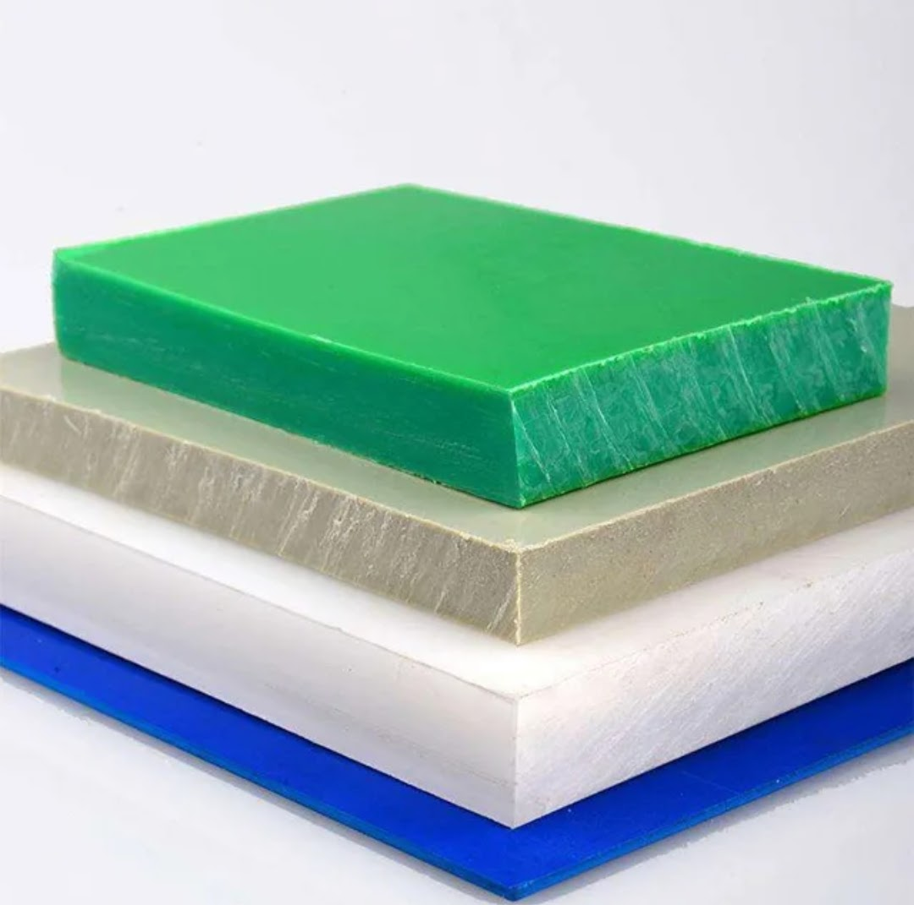
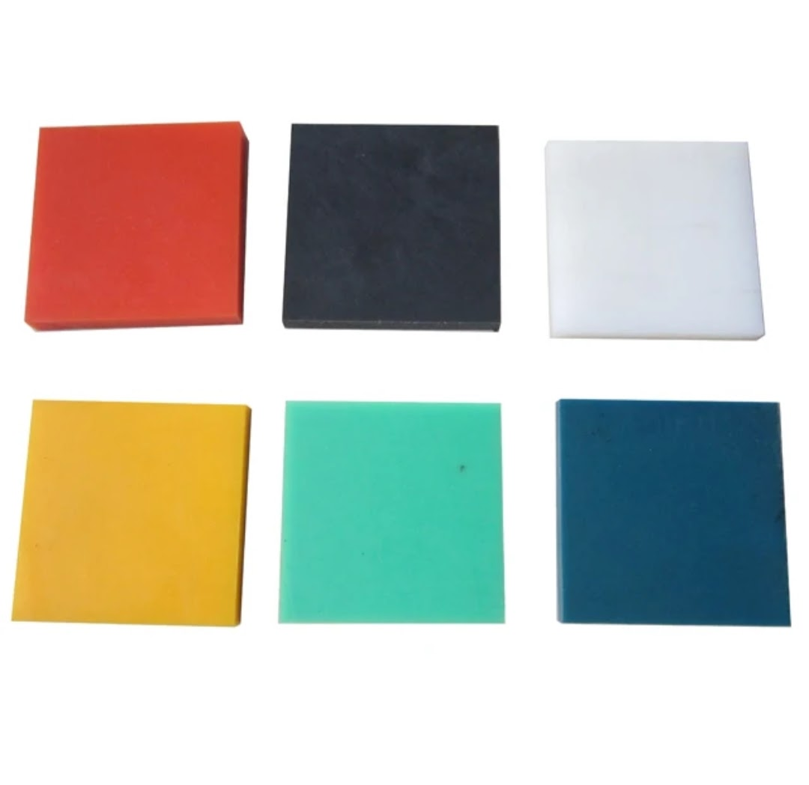
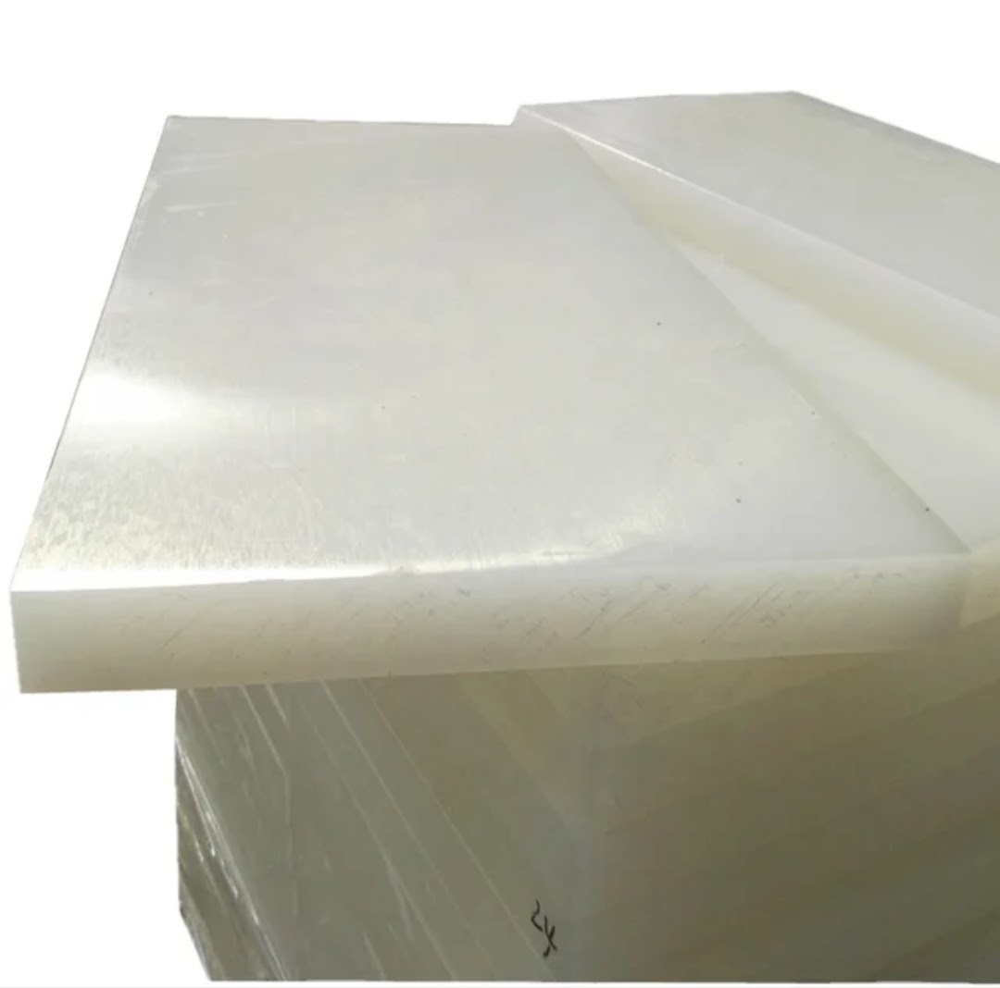

Strong, hygienic cutting boards designed for safe and efficient food
preparation in domestic, commercial, and industrial kitchens.



Product Overview
Cutting Boards are essential kitchen and food-processing tools
designed to provide a stable, hygienic surface for cutting,
chopping, and food preparation. These boards are manufactured
using durable materials that resist moisture, stains, and wear.
Suitable for both domestic and commercial use, cutting boards
help maintain food hygiene standards while ensuring long service
life even under repeated daily usage.
Hotels, caterers, and food vendors requiring hygienic surfaces
Selection Note
For Indian commercial kitchens, thicker boards are recommended
for heavy chopping and long working hours. Using separate boards
for vegetables and non-vegetarian items helps maintain hygiene
standards and avoid cross-contamination.
Commonly Used Along With
Food-grade Knives and Choppers
Kitchen Work Tables
Cleaning and Sanitizing Solutions
Ready to order or need more details?Send us your requirement directly on WhatsApp — we respond within minutes.
Are these cutting boards safe for commercial food use?
Yes. The boards are made from food-grade materials suitable for use
in restaurants, hotels, and food processing units.
Which thickness is recommended for heavy chopping?
Thicker cutting boards are recommended for meat cutting and
high-volume commercial kitchens to ensure stability and durability.
Do plastic cutting boards absorb odors or stains?
Food-grade HDPE boards resist moisture, stains, and odors when
cleaned and sanitized regularly.
Is it necessary to use separate boards for veg and non-veg items?
Yes. Using separate cutting boards helps prevent cross-contamination
and supports hygiene practices commonly followed in Indian kitchens.
Can these boards be washed frequently?
Yes. Cutting boards are designed for repeated washing and cleaning
without affecting performance or hygiene.
Are custom sizes available for bulk buyers?
Yes. Custom sizes and thicknesses can be supplied for commercial
kitchens and bulk requirements.